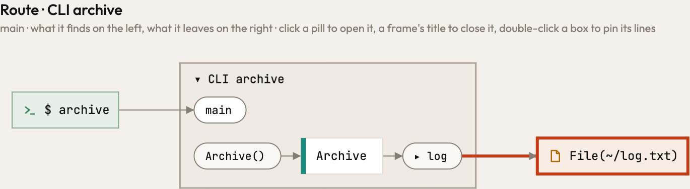
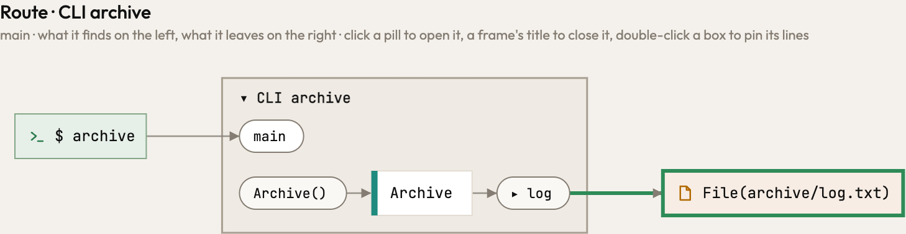
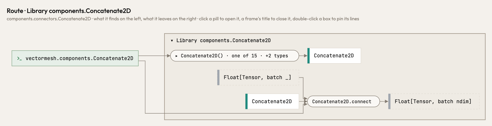
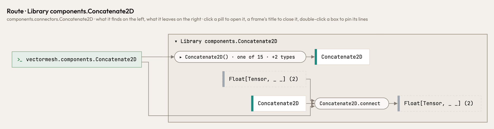
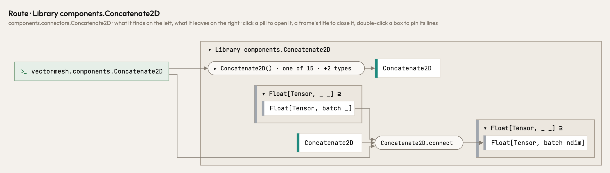

Release 0.70.0
What changed in Atlas 0.70.0
Atlas 0.70.0 is the command atlas-code. It stops guessing where your code says nothing, works out what a call runs once for every question that asks, and writes into your tree exactly what it is asked to. A fault in one file or one call no longer ends the run, and Atlas now measures itself every night. Tensors that jaxtyping annotates now stand together by rank.
The command is atlas-code
Other tools install a command atlas too (ariga's database toolkit, MongoDB's Atlas CLI), so Atlas could not be installed beside them. Atlas's command is now atlas-code, as its Homebrew package already was, and the nightly's atlas-code-nightly; alias atlas=atlas-code keeps the short name. brew upgrade, atlas update and the install scripts move an earlier atlas over and remove it. The MCP server keeps its name, atlas, so its tools are named as before; an agent registered with atlas mcp is registered again with atlas-code mcp. And an update is now announced only once all of its files are there: Studio offered 0.69.3 while its installers were still being built.
Where the code says nothing, Atlas no longer guesses
A method called home() was your home directory to Atlas, whatever object it was called on, and so were joinpath, with_suffix, parent and Path(..): Atlas went by the name. Now a library's fact holds only where ty finds that library. Your own Archive.home() is followed into its own code, and where ty cannot say what a value is, the place keeps the name the code gives it instead of a guess.
"""Write a line to the log of an archive."""
from pathlib import Path
class Archive:
def __init__(self, root: str) -> None:
self.root = root
def home(self) -> Path:
return Path(self.root)
def log(archive: Archive, line: str) -> None:
with open(archive.home() / "log.txt", "a") as f:
f.write(line + "\n")

Tensors of one rank stand together
A program that annotates its tensors with jaxtyping (Float[Tensor, "batch dim"]) drew every shape as a place of its own, so a model's components read as many short, separate flows. Now each shape stands in its rank family, the way a subclass stands in its base class: Float[Tensor, _ _] stands for the rank-2 float tensors in the picture, and a click opens it into the exact shapes. Names still count (batch dim and batch ndim are two types of one family), and so does the dtype: an Int tensor never joins a Float family.

Concatenate2D takes a batch _ and gives a batch ndim
Float[Tensor, _ _]
What a call runs is one answer
Which functions may this call run? The route, what a parameter holds and which errors a call hands on now all ask that one question, and get one answer. A value built at the call runs its own class's method; a value of a declared class may run every override below it; a call through a class runs that method and no override.
Atlas writes into your tree what it is asked to
Breaking a seal cuts out sealed=.. and nothing else, in every language's marker. A vision lands on the path it names, even where another file has the same name.
The page and the agent keep their notes whole
The page and your agent write the same notes. When both wrote at once, a note could vanish; now a lock between the two makes one wait for the other. atlas serve answers every request within bounds, and what changes something answers only its own page, never another website.
A fault stays where it happens
One panic inside ty, one MCP tool call that fails, one notebook that does not parse: in 0.69.3 any of them ended the whole run. Now that one file is read untyped, that one call answers an error, and everything else goes on.
Letters past z, and an exit status CI can read
Steps past z go on as aa, ab, as a spreadsheet names its columns, so no label names two branches. atlas-code check exits 1 when it has questions and 2 when it could not read.
Atlas measures itself, every night
Every night Atlas builds itself, reads itself and a handful of public programs, cold and warm, and runs its tests, and keeps the numbers. A night that is slower than the ones before is only a reason to look: the same run measures that commit against the last good one, turn and turn about on the same machine. Only what that reproduces is reported, and its size says how urgent it is. Every Monday next is held against the last release, so that creep shows too, and any stretch of history can be searched for the landing that made it slower. It all runs at night, so no commit pays for it.